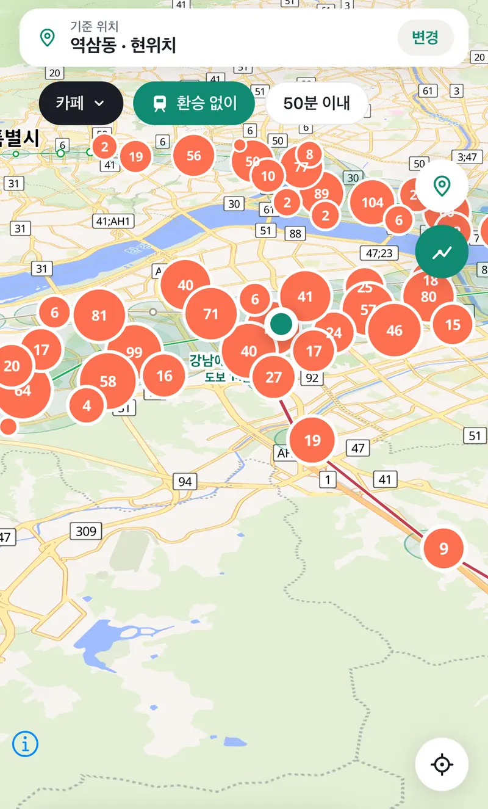
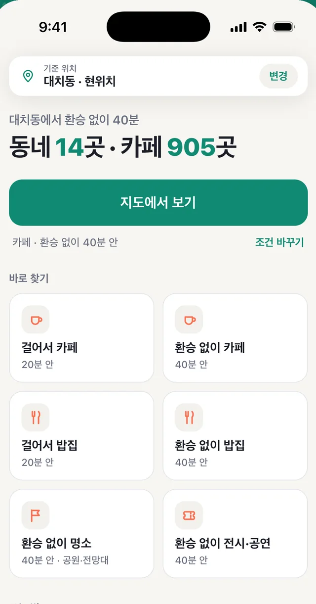
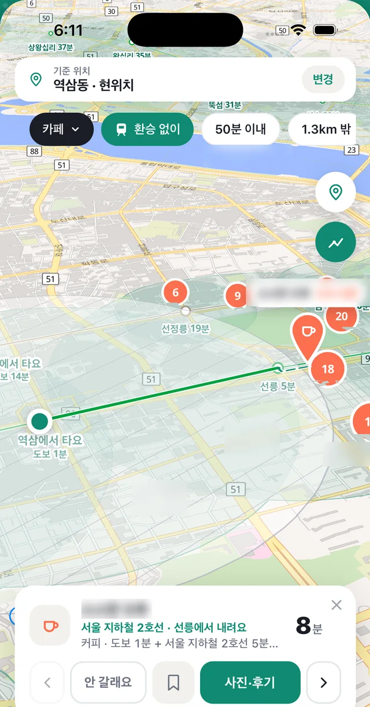
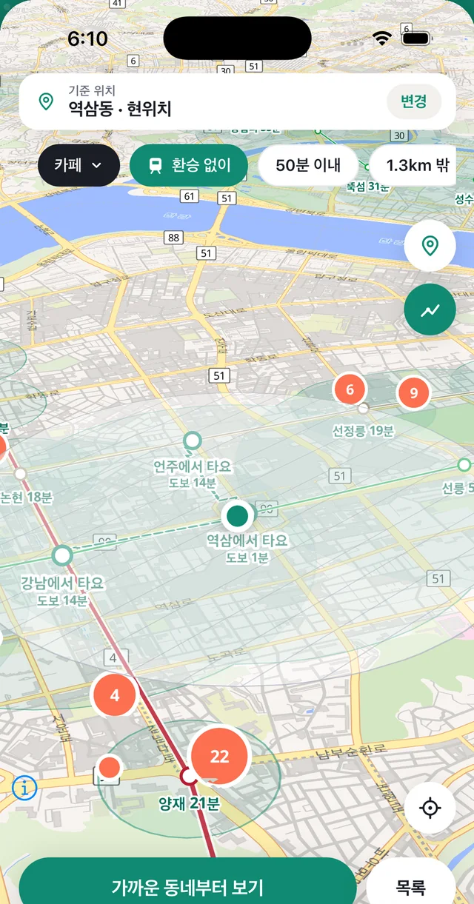
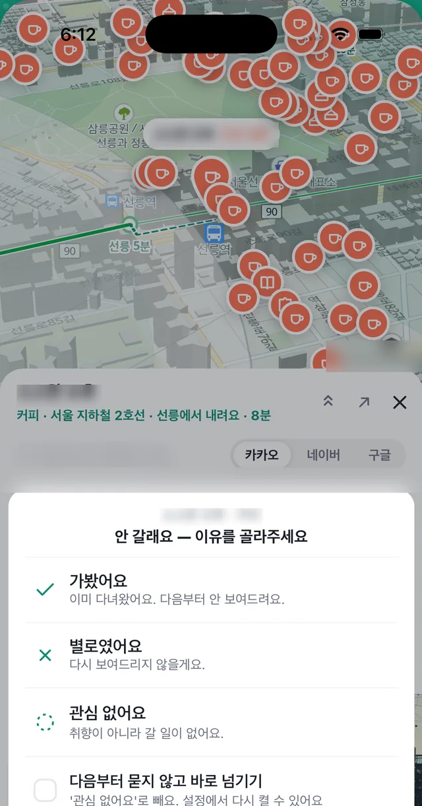

무료 · 로그인 없음 · 서울·수도권 지하철 기준이에요. 버스는 아직 안 돼요.
출발
출발지를 정하면 결과부터 나와요.
현위치로 해도 되고, 지도에서 직접 찍어도 돼요. 위치 권한은 안 줘도 돼요.
카페밥집명소전시·공연

지하철 한 번
가게 앞까지 몇 분인지 보여요.
걷는 시간, 기다리는 시간, 타고 가는 시간을 합친 시간이에요. 어느 역에서 내리는지도 같이 나와요.
열차 시각표가 아니라 역 사이 거리로 계산한 추정치라, 실제와 몇 분 차이가 날 수 있어요.

빼고 보기
늘 가던 동네는 빼고 봐요.
자주 가는 동네는 반경을 정해서 지도에서 빼요. 별로인 곳은 「안 갈래요」를 누르면 다음부터 안 나와요.
이 기록은 내 폰에만 저장돼요.


안 가본 곳
이번 주말에 어디 갈지 찾아보세요.
어느 지역에서 쓸 수 있나요?
서울과 수도권이에요. 수도권 밖에서는 「걸어서」 조건으로만 쓸 수 있어요.
버스도 되나요?
아직 지하철만 돼요. 서울·수도권 지하철 전 노선 기준이에요.
가게 사진과 후기는 어디서 보나요?
가게를 누르면 앱 안에서 카카오·네이버·구글 정보를 바로 볼 수 있어요.
무료인가요?
네. 지금은 전부 무료이고, 배너 광고도 없어요. 로그인과 계정도 없어요.
안드로이드는요?
지금은 아이폰만 있어요.